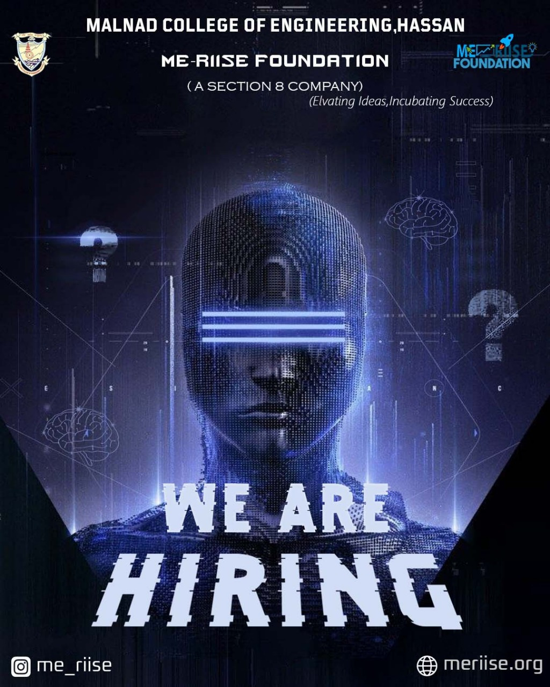

“We Are Hiring” Poster
A recruitment‑focused poster built with a bold central focal point and strong contrast, designed to stand out in crowded social feeds and notice boards. The layout keeps the main message loud while supporting details stay clean and readable.